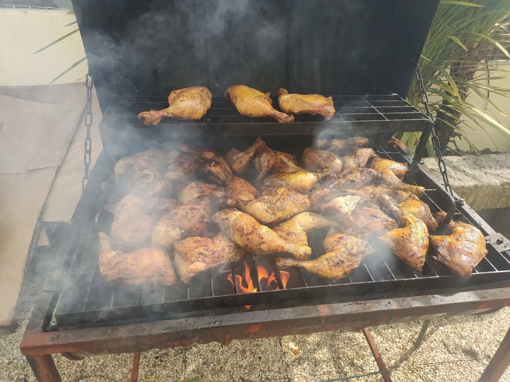
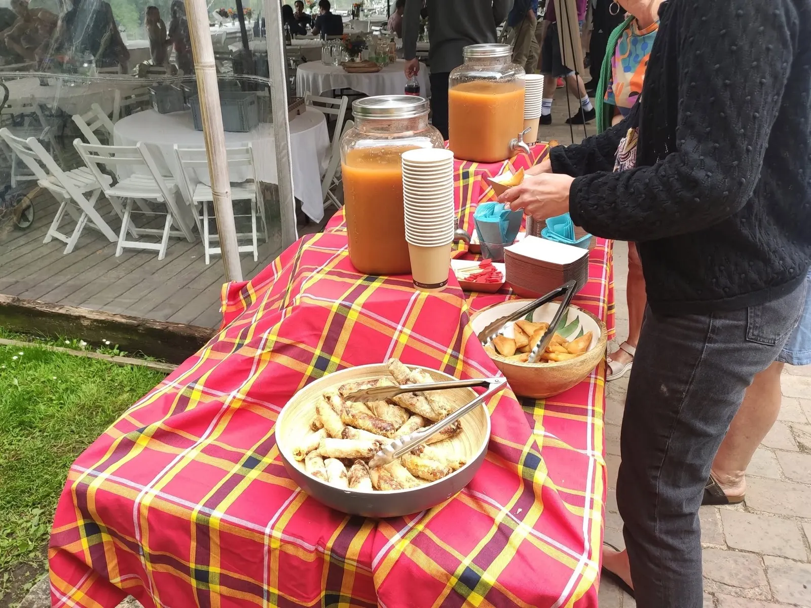
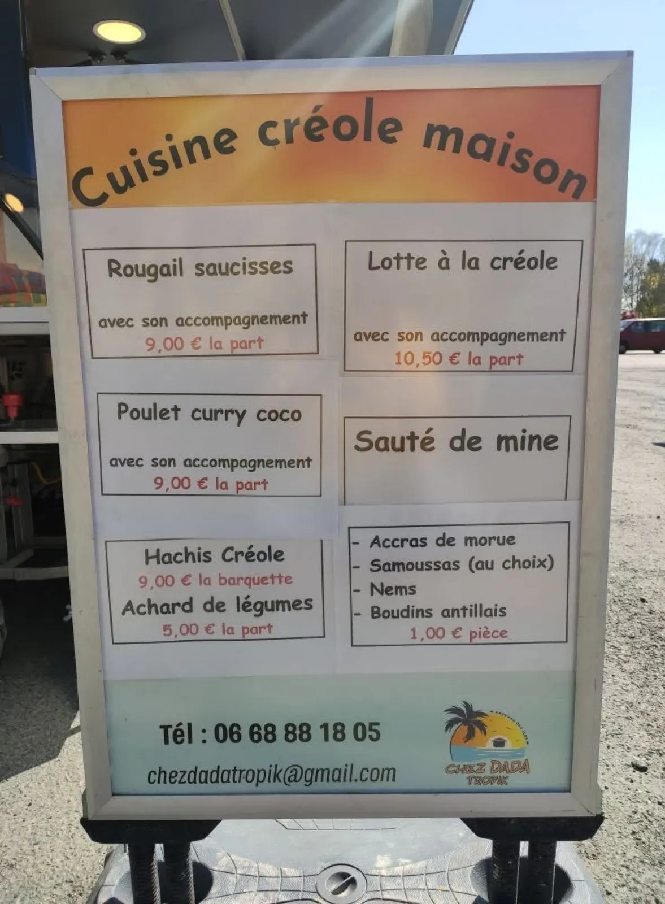
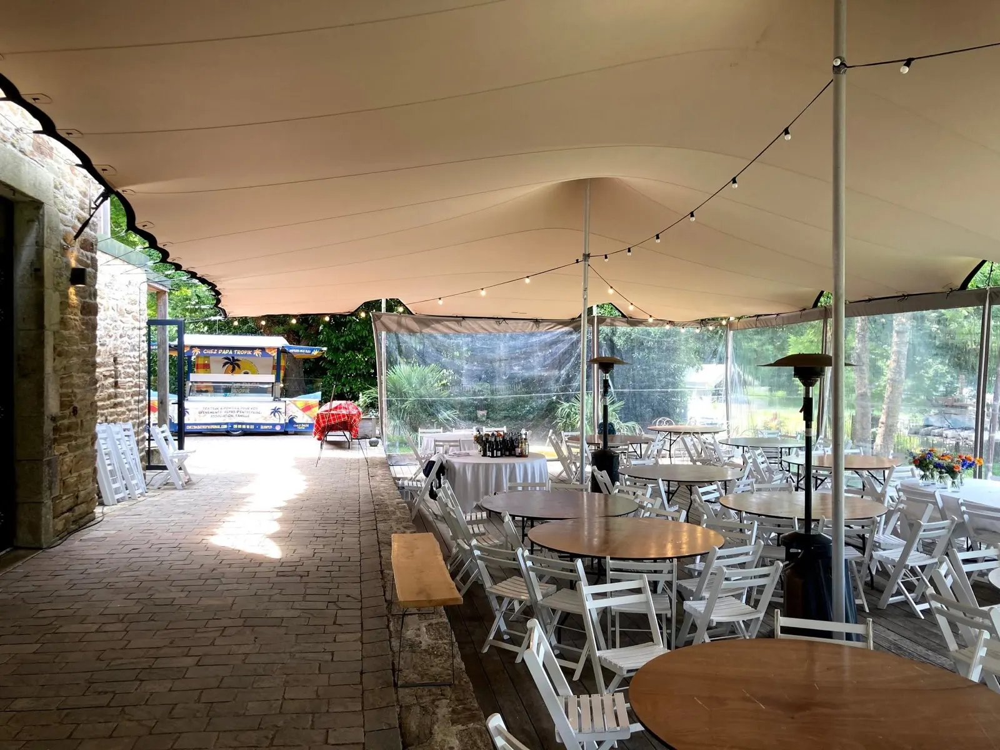
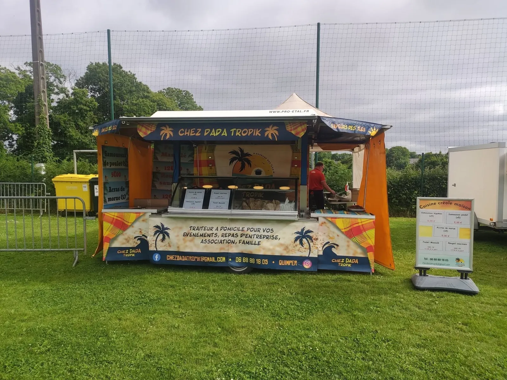
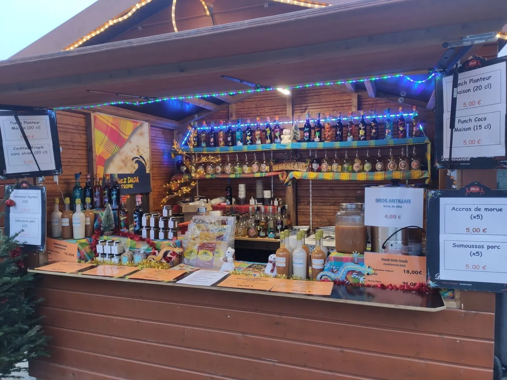

Le soleil s'invite à votre table.
Traiteur créole créatif à Quimper. Particuliers, entreprises, festivals ou associations : je vous accompagne pour des prestations sur mesure dans tout le Finistère, avec une cuisine faite maison.
4,9★★★★★53 avis sur Google
- Cuisine créole maison
- Quimper et tout le Finistère
- 4,9 sur Google, 53 avis
- Prestations sur mesure
- Devis sur demande


Pour vos événements
Particuliers, entreprises, festivals ou associations : donnez une touche tropicale à vos événements. Contactez-moi pour un devis.

- Repas de famille et mariagesMariages, anniversaires, repas de famille.
- Cocktails dînatoiresPour recevoir autour d'accras et de samoussas.
- Associations et comités d'entrepriseKermesses, clubs sportifs, tournois, repas d'entreprise.
- Festivals et événementielLa restauration des équipes, des bénévoles et du public.
Sur les festivals et les marchés
Le stand Chez Dada Tropik se pose aussi sur les festivals du Finistère et sur les marchés.
« Traiteur à domicile pour vos événements, repas d'entreprise, association, famille. »Sur la bâche du stand


Quimper et tout le Finistère
Basé à Quimper, Chez Dada Tropik se déplace pour vos événements dans tout le département.
QuimperPlomelinPont-l'AbbéFouesnantPlogonnecErgué-GabéricPluguffanBénodetGuengatPlonéiset tout le Finistère
4,9
sur 5 sur Google, d'après 53 avis.
Voir les avis sur la fiche Google
Infos et devis
06 68 88 18 05 chezdadatropik@gmail.com- Du lundi au jeudi9 h 30 – 18 h
- Vendredi9 h 30 – 18 h 30
- Samedi10 h – 17 h
- DimancheFermé